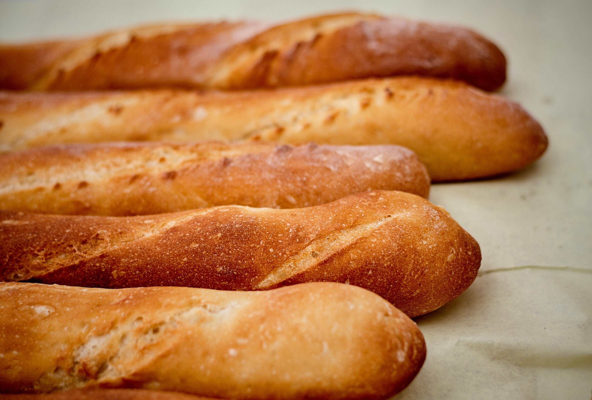

Baguette
A baguette is a long, thin, loaf of French Bread that is commonly made from basic lean dough. It is distinguishable by its length and crisp crust
Learn More
Challah
Challah is a secial bread in Jewish cuisine, usually braided and typically eaten on ceremonial occasions such as Shabbat and major Jewish holidays
Learn More
Sourdough
Sourdough bread is made by fermentation of dough using naturally occuring lactobacilli and yeast.It uses biological leavening.
Learn More